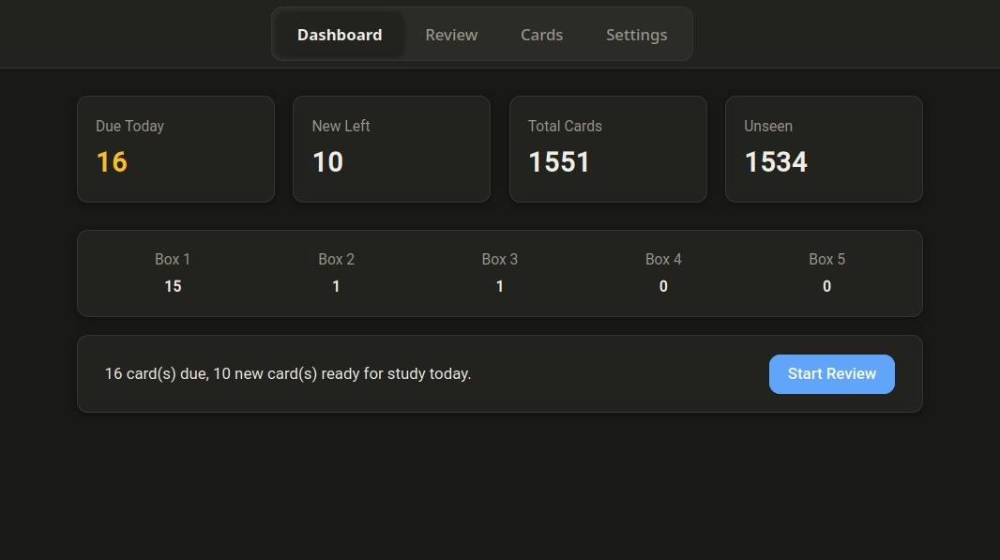
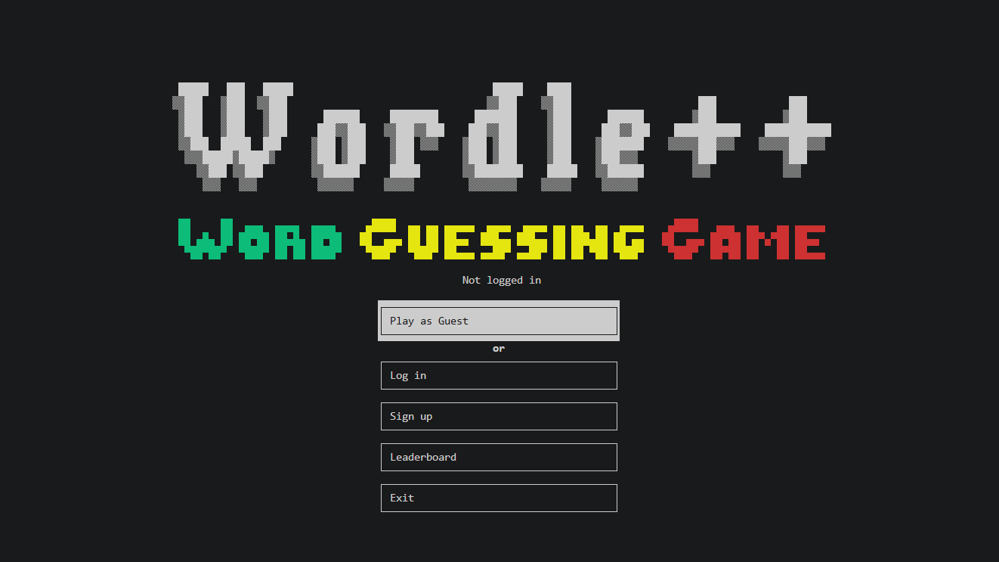

Projects

Genera
Oct 2026 · Web · Actively maintainedA flashcard web app built with vanilla JavaScript, Flask, and SQLite. It works offline and comes loaded with 4,500+ trivia questions across 24 categories and uses a 5-box Leitner spaced repetition system. It also works offline through IndexedDB and a service worker, and syncs cards and review progress across devices with account-based conflict resolution. This project was built solo in about a month.

PyDFile
Jul–Aug 2026 · Windows · FinishedA local desktop PDF tool built in Python that covers merging, splitting, page reordering, compression, watermarking, page numbering, password protection, unlocking, image conversion, and text extraction all in one lightweight app. It works completely offline and is packaged as a standalone Windows executable via PyInstaller so Python isn't required to run it. This project was also built in around 2 months.

Flip Decibel
May–Jun 2026 · Android · FinishedAn Android coin flip app with a 3D coin rendered in OpenGL ES 2.0. The coin has adjustable flip speed and a full skin system along with custom labels or images. There's also a hidden Rig Mode that silently ties the result to your phone's volume, so you always get the side you want. This is my first Android app and first time ever working with OpenGL. This project was built solo over the course of 2 months.

Wordle++
Mar–Apr 2026 · Terminal · FinishedA terminal-based word guessing game with 4 game modes: 3, 5, and 6 letter words, plus a daily challenge mode. Players can create accounts, track wins and streaks on a leaderboard, and there's also a built-in admin panel for managing word banks and player records without having to edit any code. This project was written solo in a little over about a month.